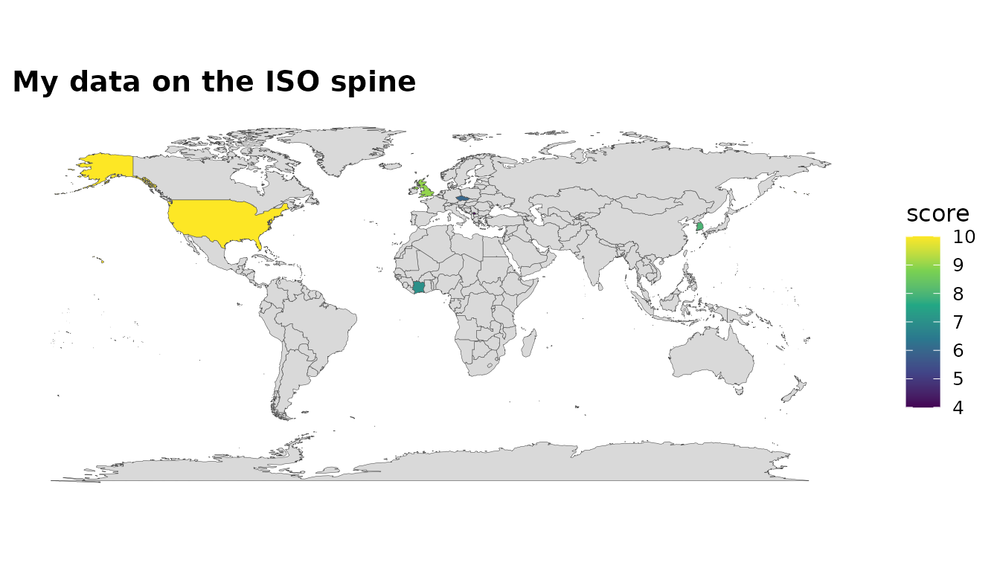

The headline use case: I have a frame keyed on messy country names — get it on a map. The package exposes the same matching machinery it uses internally.
Standardise any frame
standardize_country() attaches ISO codes and
classifications, reconciling spellings automatically:
my_data <- data.frame(
nation = c("U.S.", "S. Korea", "Czechia", "Kosovo", "Cote d'Ivoire", "UK"),
score = c(10, 8, 6, 4, 7, 9)
)
standardize_country(my_data, nation, warn = FALSE)
#> # A tibble: 6 × 6
#> nation score iso3c iso2c continent region
#> <chr> <dbl> <chr> <chr> <chr> <chr>
#> 1 U.S. 10 USA US Americas North America
#> 2 S. Korea 8 KOR KR Asia East Asia & Pacific
#> 3 Czechia 6 CZE CZ Europe Europe & Central Asia
#> 4 Kosovo 4 XKX XK Europe Europe & Central Asia
#> 5 Cote d'Ivoire 7 CIV CI Africa Sub-Saharan Africa
#> 6 UK 9 GBR GB Europe Europe & Central AsiaOne call to a map
join_world() auto-detects the country column,
standardises it and attaches geometry:
my_data |>
join_world(nation, warn = FALSE) |>
world_map(score, title = "My data on the ISO spine")
Reconcile two messy tables
country_join() joins two frames that each key on country
names, by reconciling both sides to iso3c first:
a <- data.frame(country = c("Czechia", "South Korea", "Russia"), gdp = 1:3)
b <- data.frame(nation = c("Czech Republic", "Korea, Rep.", "Russian Federation"),
pop = c(10, 51, 144))
country_join(a, b, country, nation)
#> # A tibble: 3 × 5
#> country gdp iso3c nation pop
#> <chr> <int> <chr> <chr> <dbl>
#> 1 Czechia 1 CZE Czech Republic 10
#> 2 South Korea 2 KOR Korea, Rep. 51
#> 3 Russia 3 RUS Russian Federation 144Reconcile many tables at once
country_join_all() generalises this to a whole list of
frames: every table is reconciled to iso3c first, then
reduce-joined — three sources spelled three ways collapse into one
honest table:
t1 <- data.frame(country = c("Czechia", "South Korea"), gdp = c(1, 2))
t2 <- data.frame(country = c("Czech Republic", "Korea, Rep."), pop = c(10, 51))
t3 <- data.frame(country = c("Czechia", "Korea"), area = c(79, 100))
country_join_all(list(t1, t2, t3), by = "country")
#> # A tibble: 2 × 7
#> country.x gdp iso3c country.y pop country area
#> <chr> <dbl> <chr> <chr> <dbl> <chr> <dbl>
#> 1 Czechia 1 CZE Czech Republic 10 Czechia 79
#> 2 South Korea 2 KOR Korea, Rep. 51 Korea 100Check before you trust
Always inspect what failed to match:
check_country_match(my_data$nation)
#> # A tibble: 6 × 4
#> input iso3c matched suggestion
#> <chr> <chr> <lgl> <chr>
#> 1 U.S. USA TRUE NA
#> 2 S. Korea KOR TRUE NA
#> 3 Czechia CZE TRUE NA
#> 4 Kosovo XKX TRUE NA
#> 5 Cote d'Ivoire CIV TRUE NA
#> 6 UK GBR TRUE NARepair what can be repaired
repair_country_names() is the “act on it” companion to
that report: it substitutes the closest known country name, but only
when the match is confident, and attaches a record of what it
changed:
fixed <- repair_country_names(c("Brzil", "Nehterlands", "United States"),
verbose = FALSE)
fixed
#> [1] "Brazil" "Netherlands" "United States"
#> attr(,"repairs")
#> # A tibble: 2 × 2
#> from to
#> <chr> <chr>
#> 1 Brzil Brazil
#> 2 Nehterlands NetherlandsIf something legitimately cannot be matched (an entity the backends simply do not know), extend the override table:
country_overrides(c(Somaliland = "SOM"))[c("Kosovo", "Somaliland")]
#> Kosovo Somaliland
#> "XKX" "SOM"Custom origins
If your key is already an ISO-2 or World Bank code, tell
standardize_country() via origin:
df <- data.frame(code = c("US", "KR", "BR"))
standardize_country(df, code, origin = "iso2c", warn = FALSE)
#> # A tibble: 3 × 5
#> code iso3c iso2c continent region
#> <chr> <chr> <chr> <chr> <chr>
#> 1 US USA US Americas North America
#> 2 KR KOR KR Asia East Asia & Pacific
#> 3 BR BRA BR Americas Latin America & CaribbeanPoint data onto the spine
Not all data comes keyed on names — sometimes all you have is
coordinates (events, weather stations, survey sites).
locate_country() runs a point-in-polygon lookup and tags
each point with the country that contains it, so point data joins the
ISO spine like everything else. It needs the optional sf +
rnaturalearth packages:
locate_country(lon = c(2.35, -74.0, 139.7), lat = c(48.85, 40.7, 35.7))
#> # A tibble: 3 × 2
#> iso3c country
#> <chr> <chr>
#> 1 FRA France
#> 2 USA United States
#> 3 JPN JapanCoarse coastlines can place a genuinely-onshore point (a port city,
say) just outside its country’s simplified polygon;
locate_country() snaps such points to the nearest country
within tolerance_km (25 km by default) while leaving
open-ocean points NA.